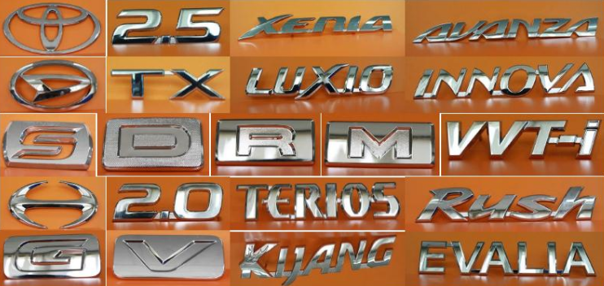
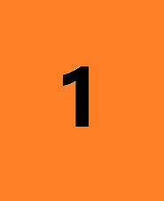
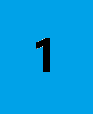

Pilih direktori Google Drive yang ingin Anda tuju.
Anda akan masuk ke link berikut ini:

Penerapan alat bantu baru untuk mengurangi waktu siklus pada stasiun kerja 3, meningkatkan output harian sebesar 15%.

Standarisasi suhu dan kelembaban ruang oven untuk menekan cacat 'orange peel' dari 3% menjadi 0.5%.

Pemasangan sensor gerak dan katup otomatis untuk mematikan aliran udara bertekanan saat mesin tidak beroperasi.